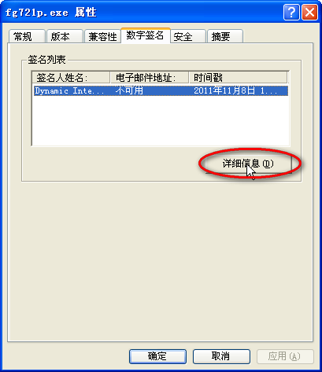
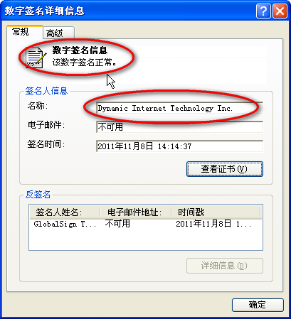

自由的天空
最新更新
2013年12月22日更新：自由们7.42版主要加入了对Windows 8.1的支持;
- 专业版支持Windows 8.1，无需使用管理员身份运行；
- 专家版在Windows 8.1企业版下暂时不能使用IE或媒体播放器;
- Android平台更新：自由们安卓版3.1和Wujie安卓手机版(一点通)2.4正式版，下载传送门;
- Wujie浏览更新：最新13.04正式版，下载传送门;
最新的自由们7.42版默认是使用A通道，如果你的ISP或者网络环境不能使用A通道或是速度较慢， 可以更换F通道试试看，具体方法可以参考自由们的使用教程。
自由们下载地址
自由们7.42/自由们7.40 专业版/专家版下载（2013年11月8日发布）：
自由们使用入门教程
自由们系列软件是使用很便捷的绿色穿墙软件，无需安装即可运行，支持目前所有版本的Windows系统，苹果Mac系统可以通过Wine或者虚拟机使用自由们，以下是对软件不熟悉的同学可以阅读的一个简单教程（截图以自由们7.21专业版为例）：
1、下载得到自由们以后，首先应该验证软件的数字签名，以确定软件下载的完整性以及没有被第三方修改过，在Windows XP操作系统下（Win7类似）方法是：在软件图标上单击鼠标右键，在弹出的快捷菜单中选“属性”，然后打开其中的“数字签名”页，双击数字签名或者选上后再点“详细信息”按钮，如下图： 
然后系统会自动验证软件的数字签名是否正确，如果没有问题的话，应该出现“该数字签名正常”的提示窗口，同时“签名人信息”的名称栏中也应该和图中完全一致，如下图所示：这样就说明软件保持软件发行的原样，没有被改动过。如果出现了“该数字签名无效”的提示或者签名人名称和图中所示的不同，那说明软件本身可能下载不完整或者已经被第三方（比如病毒、木马之类）修改过，那就一定要从安全可信的来源从新下载软件。点此继续阅读教程……
更多资源下载
更多软件和资源下载请点击这里；
收藏本站
关注最新资源的同学请把本站网址：http://go.zym9.net 加入浏览器收藏夹。